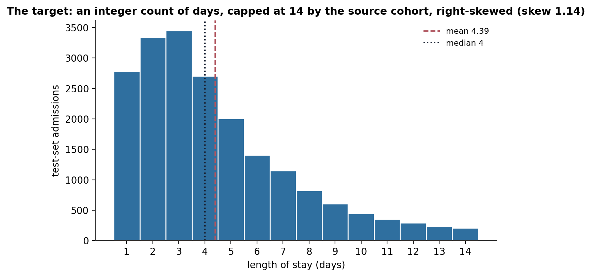
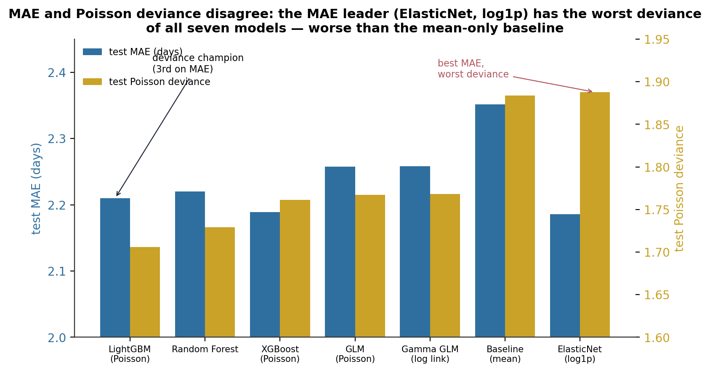
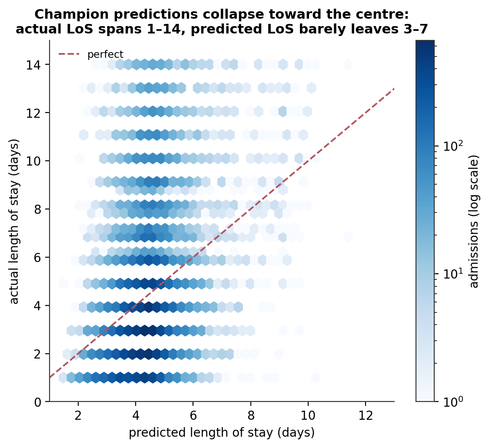
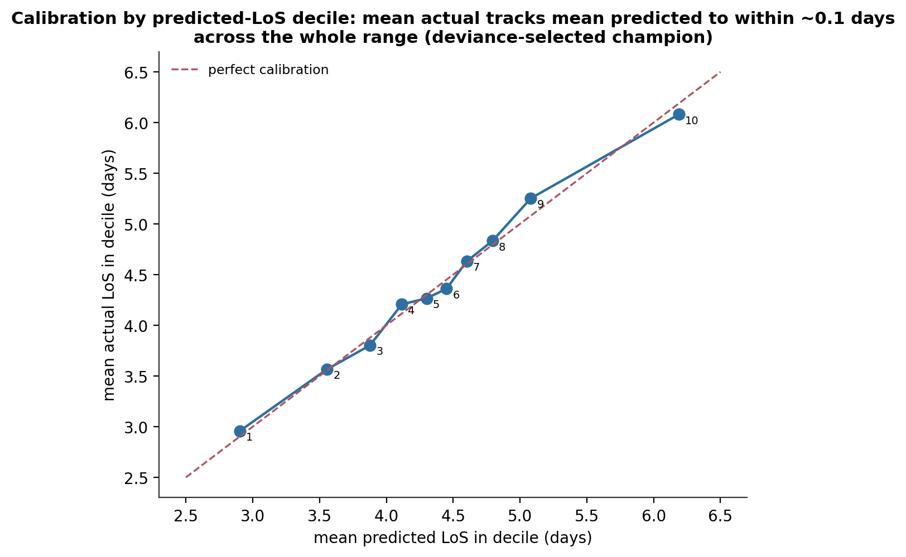
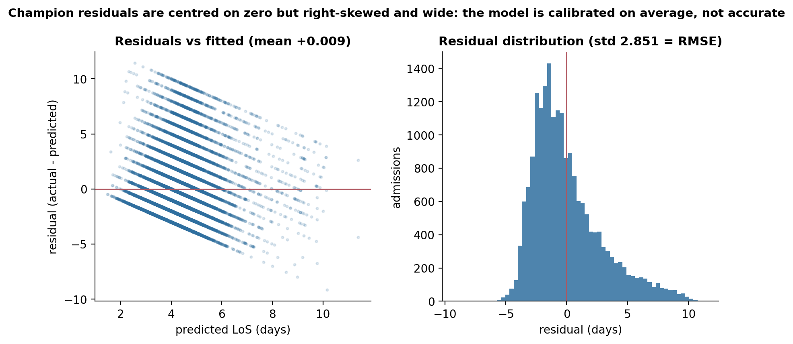
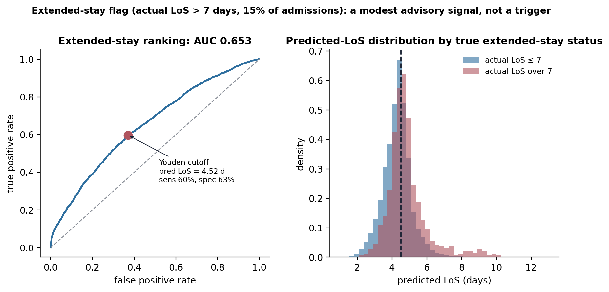
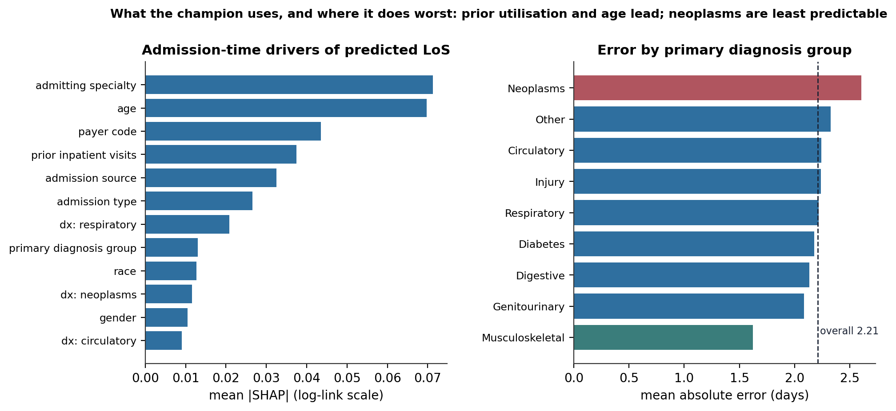

Admission-Time Length-of-Stay Forecasting: When MAE Selects the Wrong Model, and Poisson Deviance Selects the Right One
Predicting how many days an admission will last from information known at the door. A seven-model ladder, a predictive ceiling of R² 0.09, and a metric-selection trap — the model with the best MAE has the worst deviance of all seven, worse than always predicting the mean.
An admission-time length-of-stay regression on 99,340 diabetic inpatient encounters, evaluated on a patient-disjoint 19,812-encounter holdout. The leakage discipline: only the 23 features known at or before admission — 30 stay-accumulated clinical and medication columns are excluded with a stated reason each. The predictive ceiling: the champion (LightGBM, Poisson objective) reaches test R² 0.09, RMSE 2.85 days, MAE 2.21 days, barely ahead of the mean-only baseline’s MAE of 2.35. Predictions collapse toward the centre — actual stays span 1–14 days, predicted stays barely leave 3–7. The metric trap: an ElasticNet fitted on log-transformed length of stay has the best test MAE (2.19) but the worst Poisson deviance of all seven models (1.888, above the baseline’s 1.884) — its expm1 back-transform is a retransformation-biased point estimate that MAE cannot see. The operational read: a Youden-calibrated extended-stay flag (predicted stay ≥ 4.5 days) catches 60% of stays longer than a week at 63% specificity — an advisory signal for discharge planning, not a trigger (AUC 0.65).
length of stay, count regression, Poisson regression, Poisson deviance, retransformation bias, smearing estimator, model selection, LightGBM, elastic net, regression to the mean, predictive ceiling, calibration, Youden’s J, SHAP, Python
Abstract
This study builds an admission-time forecast of inpatient length of stay for a diabetic cohort, using only information available at the moment of admission. The target, days in hospital, is an integer count structurally bounded at 1–14 by the source dataset’s inclusion criterion, right-skewed (skew 1.14, mean 4.38). A leakage audit restricts the feature set to the 23 columns known at or before admission and excludes 30 stay-accumulated clinical and medication features, each with a stated reason. Seven models were fitted on a patient-disjoint 80/20 split — a mean-only baseline, Poisson and Gamma generalised linear models, an elastic-net regression on log-transformed length of stay, a random forest, and LightGBM and XGBoost with Poisson objectives — and tuned on shared patient-disjoint inner folds. The champion was selected on Poisson deviance rather than mean absolute error, because deviance penalises mean-miscalibration and tail behaviour together, which MAE does not. That choice mattered: the elastic-net model has the best test MAE (2.19 days) but the worst Poisson deviance of all seven models — 1.888, above the mean-only baseline’s 1.884 — because its expm1 back-transform produces a retransformation-biased point estimate that MAE cannot detect. The deviance champion (LightGBM, Poisson) reaches test R² 0.09, RMSE 2.85 days, and MAE 2.21 days, with a near-zero residual mean (+0.009) and decile calibration within roughly 0.1 days across the predicted range. Its predictions collapse toward the centre — actual stays span 1–14 days, predicted stays barely leave 3–7 — so the model is well-calibrated on average but weakly discriminating. A Youden-calibrated extended-stay flag (predicted stay ≥ 4.5 days for a true stay longer than a week, 15% prevalence) reaches 60% sensitivity at 63% specificity (AUC 0.65). A fairness audit across race and gender found no meaningful disparity among the two subgroups with enough test rows to support a claim.
Keywords: length of stay, count regression, Poisson deviance, retransformation bias, model selection, regression to the mean, predictive ceiling, calibration
Introduction
Length of stay drives inpatient resource consumption — beds, staffing, discharge planning, downstream capacity. A forecast available at admission, before the clinical trajectory unfolds, is an operational planning signal that a post-hoc estimate cannot be. It does not need to be precise to the day; it needs to be well-calibrated and honest about where it is confident, so a discharge-planning team can use it without being misled.
The task has two constraints that shape the whole analysis. First, leakage. Most of the strong length-of-stay predictors in an administrative dataset — the count of lab procedures, the medication regimen, the discharge disposition, the secondary diagnoses — do not exist yet at the moment of prediction; they accumulate during the stay. Using them would inflate every metric and produce a model that cannot be deployed at admission. Second, the target’s shape. Days in hospital is a right-skewed integer count bounded at 14; a normal-error assumption is questionable, and the natural objectives are Poisson-family, not ordinary least squares.
The analysis is built around one methodological decision: select the champion on Poisson deviance, not test MAE. MAE treats a model that systematically mis-predicts the mean the same as one that is well-calibrated on average but noisier point-to-point. Deviance penalises both at once. In this ladder the two criteria disagree, and the disagreement is the central finding — the MAE-best model carries a retransformation bias that deviance exposes and MAE conceals.
Method
Data, target, and leakage audit
The source is the Diabetes 130-US Hospitals for Years 1999–2008 dataset (Strack et al., 2014; Clore et al., 2014). The modelling cohort is 99,340 encounters. The regression target, time_in_hospital, is an integer count of days, bounded at 1–14 by the source dataset’s inclusion criterion — a structural boundary, not right-censoring within the data — so findings are scoped to stays of 14 days or fewer. It is right-skewed (skew 1.14, mean 4.38, median 4; Figure 1). A log1p transform reduces the skew to 0.11, which motivates fitting one model on the transformed target and using Poisson-family objectives for the rest.

The leakage audit retains 23 features known at or before admission — age, prior-utilisation counts, gender, race, admission type and source, payer code, admitting specialty, and the primary-diagnosis group and its dummies — and excludes 30, each with a stated reason. The largest excluded block is stay-accumulated clinical and medication behaviour (lab-procedure count, medication count, the medication-change family). Discharge disposition is excluded on the same logic even though it is the single strongest predictor in the companion readmission model: it is determined at discharge, not admission. The readmission outcome is excluded as downstream.
Split and preprocessing
The holdout is the first fold of a StratifiedGroupKFold (5 splits, random_state = 42) on the patient identifier, stratified on a quantile binning of the target: 79,528 training encounters, 19,812 test encounters, with zero patient overlap and near-identical mean length of stay across the split (4.38 versus 4.39 days). Numeric features were median-imputed and standardised; low-cardinality categoricals ordinal-encoded; the two high-cardinality columns (payer code, admitting specialty) target-encoded (in-sample).
Model ladder and champion selection
Seven models: a mean-only baseline; Poisson and Gamma generalised linear models with a log link (Nelder & Wedderburn, 1972; McCullagh & Nelder, 1989); an elastic-net regression fitted on log1p(target) and back-transformed with expm1 (Zou & Hastie, 2005); a random forest (Breiman, 2001); and LightGBM and XGBoost with Poisson objectives (Ke et al., 2017; Chen & Guestrin, 2016). The six non-baseline models share one preprocessing pipeline and are tuned with RandomizedSearchCV on the same five pre-materialised patient-disjoint inner folds, so their cross-validated MAE figures are directly comparable.
The champion is selected on test Poisson deviance. MAE and cross-validated MAE are reported alongside for transparency, and the analysis states explicitly whether the deviance pick differs from the MAE-only pick. The log1p/expm1 model is the case the deviance criterion is designed to catch: back-transforming a model fitted in log space produces a biased point estimate on the original scale (Jensen’s inequality; the classic correction is the smearing estimator of Duan, 1983), which scores well on MAE while systematically misrepresenting the conditional mean.
Validation lenses
The confirmed champion was checked four ways: residual diagnostics and a predicted-versus-actual density; calibration by predicted-length-of-stay decile (mean actual versus mean predicted within each bin); an operational framing (share of predictions within one and two days, error by primary diagnosis group, and a Youden’s J–calibrated extended-stay flag for a stay longer than a week; Youden, 1950); a fairness audit of per-subgroup error across race and gender (Bird et al., 2020); and a SHAP explainability pass on the champion (Lundberg & Lee, 2017).
Reproduction and software
Every number was recomputed from the persisted model_comparison.csv, calibration_table.csv, the per-group tables, the stored test_predictions.parquet, and the champion’s SHAP result object. No model was re-trained. Python 3.10 with scikit-learn 1.2, lightgbm, xgboost, statsmodels, and fairlearn.
Results
The ladder, and the MAE–deviance disagreement
The seven models span a narrow band (Table 1, Figure 2). On MAE the leader is the elastic-net on log1p (2.186 days), with XGBoost second (2.189) and the LightGBM–Poisson champion third (2.210); the mean-only baseline is 2.351. On Poisson deviance the order changes: LightGBM (Poisson) is best at 1.706, and the elastic-net is last at 1.888 — worse than the mean-only baseline’s 1.884. Every other model’s deviance rank roughly tracks its MAE rank; the elastic-net is the sole outlier, and in the predicted direction. Its expm1 back-transform yields a point estimate that minimises absolute error while systematically misrepresenting the conditional mean, exactly what deviance penalises and MAE does not. Selecting on deviance therefore promotes the model that already had the best RMSE (2.851) and the best R² (0.091) in the ladder, at a test-MAE cost of 0.024 days.
Table 1
Seven-Model Ladder on the Held-Out Test Set (n = 19,812)
| Model | MAE (days) | RMSE | R² | Poisson deviance | Within 1 day |
|---|---|---|---|---|---|
Elastic-net (log1p) |
2.186 | 2.982 | 0.006 | 1.888 (worst) | 31.1% |
| XGBoost (Poisson) | 2.189 | 2.897 | 0.062 | 1.761 | 28.5% |
| LightGBM (Poisson) — champion | 2.210 | 2.851 | 0.091 | 1.706 (best) | 27.4% |
| Random forest | 2.220 | 2.868 | 0.081 | 1.729 | 27.4% |
| GLM (Poisson) | 2.258 | 2.901 | 0.059 | 1.767 | 26.3% |
| Gamma GLM (log link) | 2.258 | 2.903 | 0.058 | 1.768 | 26.3% |
| Baseline (mean) | 2.351 | 2.991 | 0.000 | 1.884 | 23.8% |
Note. The MAE leader (elastic-net) has the worst Poisson deviance of all seven — the deviance criterion’s target failure mode. The champion is selected on deviance.

A calibrated champion at a low predictive ceiling
The deviance champion is well-calibrated on average. Its residual mean is +0.009 days (no systematic bias), its residual standard deviation equals its RMSE (2.851) as expected for a well-behaved residual, and by predicted-length-of-stay decile the mean actual tracks the mean predicted to within about 0.1 days across the whole range — the largest gap is a 0.11-day over-prediction in the top decile (Figure 4).
But calibrated is not accurate. The champion reaches R² 0.09 — barely ahead of predicting the mean for everyone — and its predictions collapse toward the centre (Figure 3): actual stays span the full 1–14 days, predicted stays barely leave the 3–7 range. It flags 27% of predictions within one day of the truth and 54% within two, against the baseline’s 24% and 48%. This is a predictive ceiling: with only admission-time information — no lab activity, no medication regimen, no clinical trajectory — the model can rank patients by expected length of stay weakly and estimate the cohort-mean-conditional-on-covariates well, but it cannot predict an individual stay.



An advisory extended-stay flag
Treating the champion’s continuous prediction as a risk score for a stay longer than a week (15% of the test set), the ranking AUC is 0.65 — real but modest (Figure 6). The Youden-optimal cutoff is a predicted length of stay of 4.52 days, at which the flag reaches 60% sensitivity and 63% specificity (1,772 true positives, 6,237 false positives, 1,198 false negatives, 10,605 true negatives). Roughly six in ten genuinely extended stays are flagged, at the cost of also flagging about a third of the patients who will not have one. That is a starting point for a discharge-planning review, not a precise clinical trigger.

Error is not uniform across diagnosis groups (Figure 7, Table 2): from 1.62 mean absolute days for musculoskeletal admissions (the most predictable) up to 2.60 for neoplasms (the least). The spread looks like genuine differences in how predictable each condition’s stay is, not model-selection noise.
Table 2
Champion Mean Absolute Error by Primary Diagnosis Group (test set, groups with n ≥ 100)
| Diagnosis group | Mean absolute error (days) | n |
|---|---|---|
| Musculoskeletal | 1.62 | 1,003 |
| Genitourinary | 2.09 | 1,013 |
| Digestive | 2.14 | 1,864 |
| Diabetes | 2.18 | 1,693 |
| Respiratory | 2.22 | 2,842 |
| Injury | 2.24 | 1,366 |
| Circulatory | 2.24 | 5,866 |
| Other | 2.33 | 3,555 |
| Neoplasms | 2.60 | 605 |
Note. Overall MAE 2.21 days. A tiny “Missing” group (n = 5) is omitted.

Fairness and drivers
The fairness audit compares per-subgroup error across race and gender. Only two subgroups have enough test rows for a confident claim — Caucasian (76% of the test set) and African American (18%) — and within them the error differences are small: Caucasian female 2.21 versus male 2.18, African American female 2.26 versus male 2.30, all under 0.15 days. The smallest subgroups show a wider apparent spread (Asian male 2.47 on 59 rows, Missing male 2.02 on 220) but are too thin to treat as findings. No meaningful disparity is surfaced among the groups that can be assessed with confidence.
SHAP attributions put admitting specialty and age at the top of the champion’s drivers (target-encoded specialty carrying most of the signal, as in the readmission model), followed by payer code, prior inpatient visits, and admission source and type (Figure 7). These are administrative and demographic proxies for case mix; the clinical detail that would sharpen the forecast is precisely what the leakage audit correctly withholds.
Discussion
Principal findings. From admission-time information alone, length of stay in this cohort is predictable only weakly: the champion reaches R² 0.09 and its predictions regress toward a narrow central band. It is, however, well-calibrated — residual mean near zero, decile calibration within 0.1 days — which is the property a planning signal needs. The methodological result is that MAE is the wrong criterion for selecting a count-regression model: the MAE-best model here carries a retransformation bias, has the worst Poisson deviance of the seven, and would have been crowned by an MAE-only comparison.
Why the ceiling is low. The signal that actually determines a stay’s length — how the workup unfolds, what procedures are ordered, how the medication regimen changes, where the patient is discharged to — accumulates during the admission and is deliberately excluded here. What remains is case-mix proxies: specialty, age, payer, prior utilisation, primary diagnosis. Those carry enough information to estimate a covariate-conditional mean well and to rank extended-stay risk modestly, but not to forecast an individual duration. This is the length-of-stay counterpart of the readmission model’s diffuse-signal ceiling and the crime-severity regression’s context-only ceiling: when the causal drivers are withheld, the remaining context explains little.
Operational read. The champion is usable today as a discharge-planning input, not a decision-maker. The extended-stay flag at a predicted 4.5 days is a defensible advisory threshold for triggering a planning review, appropriate to pilot alongside existing workflows rather than to drive bed allocation. What the notebook leaves behind independent of the specific champion: a reusable admission-time-safe feature audit, a documented case for deviance over MAE as the selection criterion for a count target, and a Youden-calibrated flag rather than an arbitrary cutoff.
Limitations. Single train/test split on a historical cohort; the target encoder is in-sample; the extended-stay threshold and the fairness metrics are diagnostics on the same holdout. The 1–14-day boundary is a source inclusion criterion, so nothing here generalises to longer stays. SHAP was computed on 500 test rows on the model’s log-link scale.
Conclusion. Admission-time length of stay is a low-ceiling forecast — calibrated but not accurate — and the honest way to select among count-regression models for it is on deviance, not MAE. The champion is a modest planning aid; its main contribution is the demonstration of a metric-selection trap that a leaderboard sorted by MAE would have fallen into.
References
Bird, S., Dudík, M., Edgar, R., Horn, B., Lutz, R., Milan, V., … Walker, K. (2020). Fairlearn: A toolkit for assessing and improving fairness in AI (Technical Report MSR-TR-2020-32). Microsoft.
Breiman, L. (2001). Random forests. Machine Learning, 45(1), 5–32. https://doi.org/10.1023/A:1010933404324
Chen, T., & Guestrin, C. (2016). XGBoost: A scalable tree boosting system. In Proceedings of the 22nd ACM SIGKDD International Conference on Knowledge Discovery and Data Mining (pp. 785–794). https://doi.org/10.1145/2939672.2939785
Clore, J., Cios, K., DeShazo, J., & Strack, B. (2014). Diabetes 130-US Hospitals for Years 1999–2008 [Data set]. UCI Machine Learning Repository. https://doi.org/10.24432/C5230J
Duan, N. (1983). Smearing estimate: A nonparametric retransformation method. Journal of the American Statistical Association, 78(383), 605–610. https://doi.org/10.1080/01621459.1983.10478017
Ke, G., Meng, Q., Finley, T., Wang, T., Chen, W., Ma, W., … Liu, T.-Y. (2017). LightGBM: A highly efficient gradient boosting decision tree. In Advances in Neural Information Processing Systems 30 (pp. 3146–3154).
Lundberg, S. M., & Lee, S.-I. (2017). A unified approach to interpreting model predictions. In Advances in Neural Information Processing Systems 30 (pp. 4765–4774).
McCullagh, P., & Nelder, J. A. (1989). Generalized linear models (2nd ed.). Chapman & Hall. https://doi.org/10.1007/978-1-4899-3242-6
Nelder, J. A., & Wedderburn, R. W. M. (1972). Generalized linear models. Journal of the Royal Statistical Society: Series A, 135(3), 370–384. https://doi.org/10.2307/2344614
Strack, B., DeShazo, J. P., Gennings, C., Olmo, J. L., Ventura, S., Cios, K. J., & Clore, J. N. (2014). Impact of HbA1c measurement on hospital readmission rates: Analysis of 70,000 clinical database patient records. BioMed Research International, 2014, 781670. https://doi.org/10.1155/2014/781670
Youden, W. J. (1950). Index for rating diagnostic tests. Cancer, 3(1), 32–35.
Zou, H., & Hastie, T. (2005). Regularization and variable selection via the elastic net. Journal of the Royal Statistical Society: Series B, 67(2), 301–320. https://doi.org/10.1111/j.1467-9868.2005.00503.x
Single-split regression on a historical extract, scoped to stays of 14 days or fewer; the target encoder and the operating-point diagnostics use the same holdout. The champion is calibrated on average, not accurate per patient; the reported R² of 0.09 is the leakage-controlled admission-time ceiling.